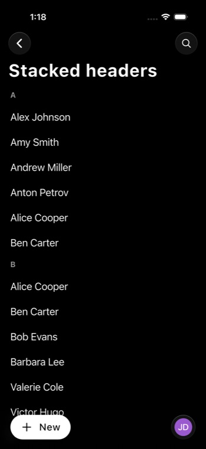
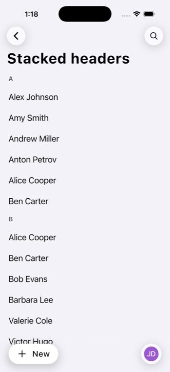
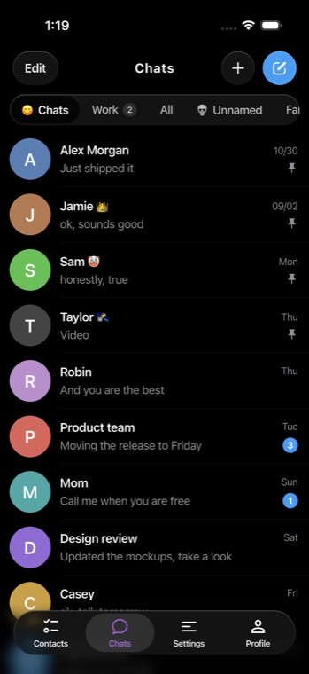

Пейджинг и заголовки
Большие заголовки, сворачиваемые секции, липкие заголовки, горизонтальный пейджер списков и растягивающийся хедер.




Как бары знают высоту
ChromeScaffold держит ChromeController: бары (ChromeBar, LargeTitleHeader, CollapsibleBar) и липкие заголовки (PinnedHeader) регистрируют в нём свою высоту. Скролл-контент получает верхний и нижний отступ, а зона блюра растёт ровно до нужной высоты.
Большой заголовок
LargeTitleHeader — 44 pt бар с кнопками и крупный заголовок 34 pt; он сворачивается в малый по мере скролла и «защёлкивается» в открытое/закрытое состояние (snapLargeTitle).
Сворачиваемая секция
CollapsibleBar(bar:, section:, sectionHeight:) — бар, под которым прячется поиск или баннер; с initiallyCollapsed: true поле поиска выезжает при протягивании вниз (как в мессенджерах).
Липкие заголовки
PinnedSection(header:, slivers:) — заголовок секции прилипает к верху и вытесняется следующим. Зона блюра растёт на высоту прилипшего заголовка.
Пейджер списков
Когда тело — горизонтальный PageView вертикальных списков, скажите скаффолду: ChromeScaffold(scrollDepth: 1). Полоса папок GlassScrollSegments(position: pageController…) следует за пейджером при свайпе.
final pages = PageController();
ChromeScaffold(
scrollDepth: 1,
topBar: CollapsibleBar(
bar: TitleBar(title: 'Chats'),
footer: GlassScrollSegments<int>(
value: tab, onChanged: (i) => pages.animateToPage(i, duration: const Duration(milliseconds: 300), curve: Curves.easeOut),
segments: const [GlassSegment(value: 0, label: 'All'), GlassSegment(value: 1, label: 'Work')],
),
footerHeight: 44,
),
body: PageView(controller: pages, children: [for (var i = 0; i < 2; i++) ListView(children: const [])]),
)Растягивающийся хедер
StretchHeader — шапка профиля: при протягивании вниз аватар превращается в фото во весь экран (MorphBox плавно двигает прямоугольник и радиус).